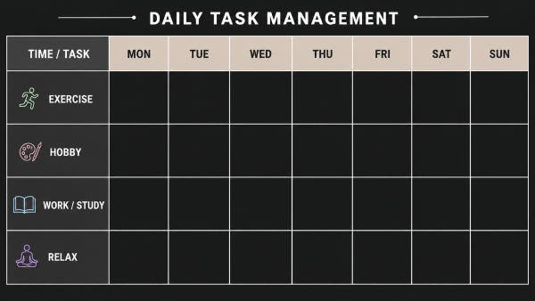

Solutions To Reduce Screentime
- Acknowledge the problem of screen addiction. Don't neglect it.
- Start restricting your screentime by abstaining visit to your most watched apps/sites.
- Make sure to keep track of when and how long you watch and record it in a book on piece of paper
- Find new hobbies to replace your screentime.
- Work on sleep habits and make some lifestyle changes so that your
- If you feel your screen-situation is extremely severe, then try to talk to family members, or seek professional help.
A New Method to Try
Divide the day into four segments, each with a specific goal in mind. Set the goal for each segment
and complete that goal within the alotted time. After completing your goal in the segment, give yourself
some screentime. Do not give yourself screentime after the completion of every goal, but maybe for only 2 or 3 of them.
Look at the picture below to get an idea of this method of control.
